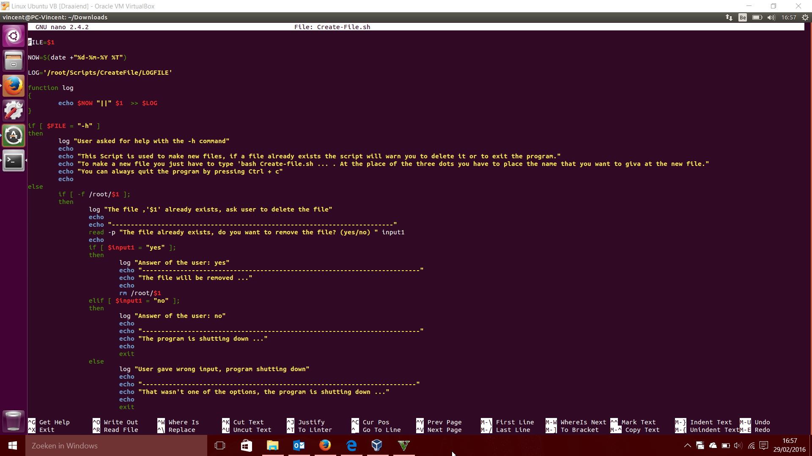

GIP-SITE Vincent Boden


Linux is een heel uitgebreid besturingssysteem dat voornamelijk is ontstaan uit twee grote delen namelijk Debian en Slackware. Er bestaan honderden versies van Linux. Omdat Linux een open source besturingssysteem is wilt dit zeggen dat iedereen bijna elke Linux versie gratis kan en mag gebruiken.
Op Nv Imas zelf gebruikte iedereen Linux als besturingssysteem opgedeeld in drie versies, namelijk 60% Ubuntu, 20% SUSE en 20% Redhat. Toen ik hier voor het eerst aankwam wist ik meteen dat dit een uitdaging ging worden omdat ik zelf tuis alleen gebruik maak van Winsows als hoofdbesturingssysteem.
In het begin vond ik dit een beetje vreemd maar na een tijdje begon ik de voordelen te zien van het gebruik van Linux in dit bedrijf, namelijk het feit dat het zo goedkoop is, dat het zeer goed in samenwerking gaat met de Raspberry Pi’s die zijn gemonteerd door heel het bedrijf en ook omdat Linux een zeer ligt besturingssysteem is wat er dus voor zorgt dat alles vlot verloopt.
Toch gebruikte alle werknemers een virtuele Windows 7 voor hun mailverkeer omdat dit gedaan werd met Outlook. Dit hebben ze zo gedaan omdat al de werknemers van VGP werken met een Windows computer met Outlook. Ook doet men dit omdat oplossen van problemen eenvoudiger wordt tussen twee Windows computers dan tussen een Windows computer en een Linux computer.
Op mijn stagebedrijf heb ik ook het nut geleerd van scripts te maken. Hieronder ziet u een afbeelding van een script dat ik zelf heb moeten maken van mijn stagementor als oefening.
Het is een eenvoudig script waarmee je nieuwe files kan aanmaken. Wanneer de file al bestaat zal het vragen om het te vervangen. Er is ook een help functie ingebouwd en alles wat gedaan wordt met het script wordt ook gelogt in een .log file. Zo kan je alles tot op de voet volgen.

Ik zelf ga thuis nog altijd Windows blijven gebruiken maar ik zal af en toe een virtuele machine gebruiken met Linux Ubuntu erop omdat dit toch wel zeer handig kan zijn voor sommige toepassingen.